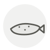

Trout
Truite
| Latin name | Salmo trutta |
|---|---|
| Family | Fish & seafood |
| Origin | Europe & western Asia |
| Season | March – September |
| Flavour | Delicate · Sweet · Marine · Mild |
| Typical price | 10–16 €/kg |
What it is
Truite au bleu depends on the fish being killed moments before cooking — a film of natural mucus on the skin reacts with vinegar and turns steel blue. Touch the fish with your hands and the effect is ruined.
In the kitchen
Stuff the cavity with lemon and herbs and bake it whole. Fillets of trout dry out faster than almost any other fish.
Goes with
Almond Butter Lemon Parsley White wine vinegar Dill Cream Hazelnut
Same species
Salmon Smoked salmon Sea trout
Also used with
Almond oil Begonia petals Douglas fir tips Hairy bittercress Linden honey Oxalis
In season alongside
Haddock Hake John Dory Plaice Pollock Sea bass
Something wrong here, or missing? Tell us